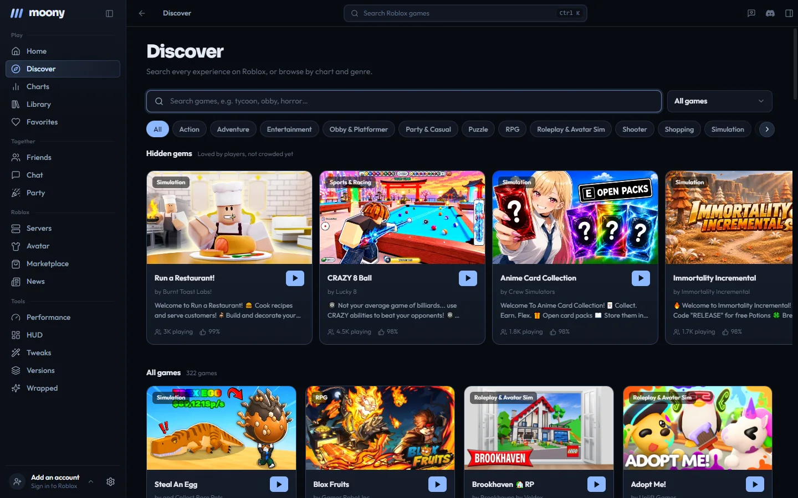
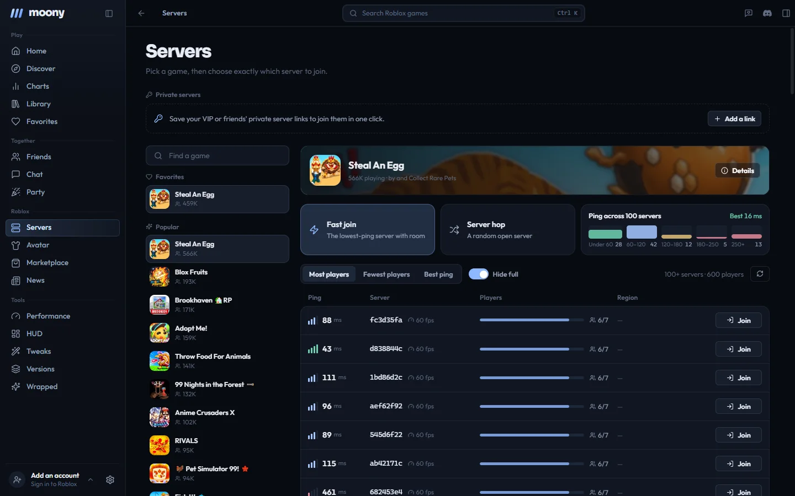
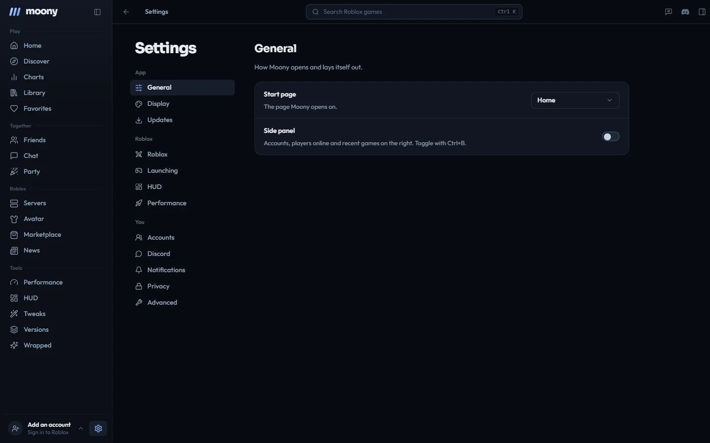

Everything in Moony.
Moony runs on top of the official Roblox player. These are the things it adds, grouped the way they appear in the app.
Play
Find a game and get into it fast.
A home screen that starts with your game
Your last game sits at the top with Play and Pick a server, next to your account, friends, Boost and Discord status.
Discover and Charts
Search all of Roblox, browse by genre, and see live rankings for most played, trending and up-and-coming games.
Library and Favorites
Every game you've played with your hours, plus the games you've saved.
Playtime
Moony tracks how long you play each game, even when you didn't launch it from Moony.

Servers
Choose where you play instead of taking whatever Roblox gives you.
Fast join
Joins the lowest-ping server that still has room, in one click.
Server hop
Moves you to a different open server, never the one you're already in.
Ping at a glance
Signal bars and ping for every server, plus a chart of how ping is spread across all of them.
Region lookup and private servers
See which city a server is in, and save VIP or friends' private server links.
Auto-rejoin
If Roblox disconnects you, Moony can put you back in the same server (up to three tries).

Together
Play with friends without asking what server they're in.
Party mode
Pick a leader and Moony follows them into every server they join or hop to.
Friends and chat
See who's online and what they're playing, join them, and message them from Moony.
Discord status
Show the game you're playing on your Discord profile, with a Join my server button for friends.
Notifications
A Windows notification when a friend comes online or joins a game you can join.
Tools
Make Roblox run and look the way you want.
Boost mode
While you play, Roblox gets high CPU priority and Windows switches to the High performance power plan. Both go back when you leave.
Performance
Ping, CPU and RAM recorded for every session, so you can see where lag came from.
In-game HUD
An overlay with widgets like session time, ping, server region, PC usage and a music visualiser, plus a custom crosshair.
Tweaks and versions
Mods and engine settings (FFlags) for the Roblox player, and a choice of which Roblox version to run.
Wrapped
Your month or year in Roblox as a card you can save and post.
Make it yours
Set your own backdrop and size.
Your own background
Put a picture, GIF or video behind the whole app. It stays on your PC.
Interface scale
Make the whole interface bigger or smaller, from 75% to 150%.
